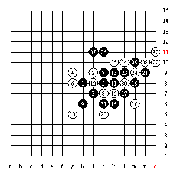
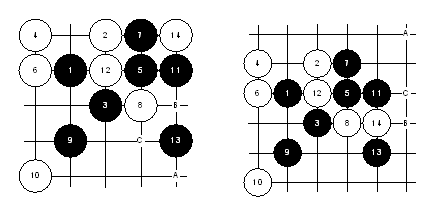

|
如图：瑞星局  瑞星局是目前很流行的开局，在很多重大的国内、国际比赛中屡屡出现，这主要归于它黑白棋的平衡性很强。 实战，双方按照定式走到第10手后，黑棋对11手进行了选择。常见的黑棋有I8、I11点。但实战黑棋选择了H7这个点。从我对棋局的整体感觉来说，这个点黑棋略微的亏，白棋如果12走在16位对攻，是不错的一种选择，而实战白棋选择防守也是很稳重的一种下法，没有什么不妥。黑棋13做棋，并控制局面，这是一步好棋，白14的应对也很正常。当黑棋15继续做棋的时候，白棋16出现了败招。白棋此时可以有两种下法，第一可以利用自己的四三杀，先抢19位，这样可以阻止住黑棋19-5-23这条线的利用。第二白16走在17位，这步棋的选择，需要看出13-15和9-15这两个二那个重要。实战白棋选择错误。18如果挡在21位，黑棋可以连续走A、23、19位获胜。当黑棋走到23步时，黑棋的优势已经很明显了。白24如果J7位，黑棋还是实战的25手，白棋无法应对。当29活三后，黑棋有A、B、C的获胜手段，白棋就此认输。 纵观整个棋局，白棋也就一手失误，但所产生的结果是很严重的。而我想这也就是五子棋一子输赢的特有魅力吧。
如图：浦月局
当我看到这个棋谱的时候，就感到有很多东西想和大家说说，尤其对五子棋初学者来说是很重要的。 我相信很多五子棋爱好者会经常听到浦月、花月必胜局，白棋没得下的说法。而且在正式的高水平选手比赛中根本见不到。但我觉得这并不是浦月、花月的全部内涵。让我来看，浦月、花月是对我们掌握五子棋技巧的试金石。它能充分的体现你对棋的认知程度。 说得大一点，即使在实战中见不到浦月、花月局。但在其它开局里，也将反应出你对这两个开局的认识（就是五子棋技巧），所以理解其中的手段，而不是胜的棋谱，这才是学习浦月、花月（强开局）的重点。望大家多多去体会棋局中的技巧。好！废话多了点，我们看实战。黑7体现了序盘争二的一个基本道理。白8强防，黑9适应手，根据对方的不同应点，考虑不同的进攻区域。11做棋，好棋！白12强防。白棋18如果反挡，黑于31位活三，白棋的反击无法取得效果。白棋20疑问手？此时白棋只能于21位防守。而黑21只要单做25位就杀了。不过，正是白棋如此的弱，黑棋随后到下得太随意了，连白棋的四三都没注意，就怎么简单的输了。 好！下面我们看看对13点的一些理解，13单走在15也是对白棋的巨大打击。同样是放守8-12这条白线，但这里产生的效果是很不一样的！如图，  白棋18如果反挡，黑于31位活三，白棋的反击无法取得效果。白棋20疑问手？此时白棋只能于21位防守。而黑21只要单做25位就杀了。不过，正是白棋如此的弱，黑棋随后到下得太随意了，连白棋的四三都没注意。 所以理解其中的手段，而不是胜的棋谱，这才是学习浦月、花月（强开局）的重点。望大家多多去体会棋局中的技巧根据白棋的不同防守，黑棋产生的A、B、C三个利用的点位是不同的，大家体会一下留三（眠三）不冲的好处！ |

| 首页 | 入门教程 | 规则帮助 | 名局棋谱 | 弈坛春秋 |
简 介 |
|
| 中文名： | 五子棋 |
| 英文名： | Gomoku |
| 人数： | 1人/2人 |
| 起源： | 中国 |
| 棋盘： | 15×15 |